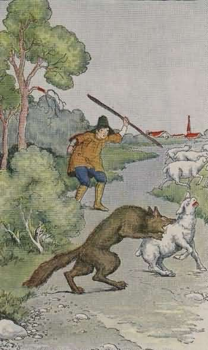

Anak Penggembala dan Serigala
Seorang anak gembala selalu menggembalakan domba milik tuannya di dekat suatu hutan yang gelap dan tidak jauh dari kampungnya. Karena mulai merasa bosan tinggal di daerah peternakan, dia selalu menghibur dirinya sendiri dengan cara bermain-main dengan anjingnya dan memainkan serulingnya. Suatu hari ketika dia menggembalakan dombanya di dekat hutan, dia mulai berpikir apa yang harus dilakukannya apabila dia melihat serigala, dia merasa terhibur dengan memikirkan berbagai macam rencana.
Tuannya pernah berkata bahwa apabila dia melihat serigala menyerang kawanan dombanya, dia harus berteriak memanggil bantuan, dan orang-orang sekampung akan datang membantunya. Anak gembala itu berpikir bahwa akan terasa lucu apabila dia pura-pura melihat serigala dan berteriak memanggil orang sekampungnya datang untuk membantunya. Dan anak gembala itu sekarang walaupun tidak melihat seekor serigala pun, dia berpura-pura lari ke arah kampungnya dan berteriak sekeras-kerasnya, "Serigala, serigala!"
Seperti yang dia duga, orang-orang kampung yang mendengarnya berteriak, cepat-cepat meninggalkan pekerjaan mereka dan berlari ke arah anak gembala tersebut untuk membantunya. Tetapi yang mereka temukan adalah anak gembala yang tertawa terbahak-bahak karena berhasil menipu orang-orang sekampung.
Beberapa hari kemudian, anak gembala itu kembali berteriak, "Serigala! serigala!", kembali orang-orang kampung yang berlari datang untuk menolongnya, hanya menemukan anak gembala yang tertawa terbahak-bahak kembali.

Pada suatu sore ketika matahari mulai terbenam, seekor serigala benar-benar datang dan menyambar domba yang digembalakan oleh anak gembala tersebut.
Dalam ketakutannya, anak gembala itu berlari ke arah kampung dan berteriak, "Serigala! serigala!" Tetapi walaupun orang-orang sekampung mendengarnya berteriak, mereka tidak datang untuk membantunya. "Dia tidak akan bisa menipu kita lagi," kata mereka.
Serigala itu akhirnya berhasil menerkam dan memakan banyak domba yang digembalakan oleh sang anak gembala, lalu berlari masuk ke dalam hutan kembali.
Pesan Moral "Seorang pembohong tidak akan pernah dipercayai lagi, walaupun saat itu mereka berkata benar, maka dari itu mulai saat ini kita biasakan selalu berkata jujur ".
Sumber dongeng : http://www.ceritakecil.com/cerita-dan-dongeng/Anak-Penggembala-dan-Serigala-39